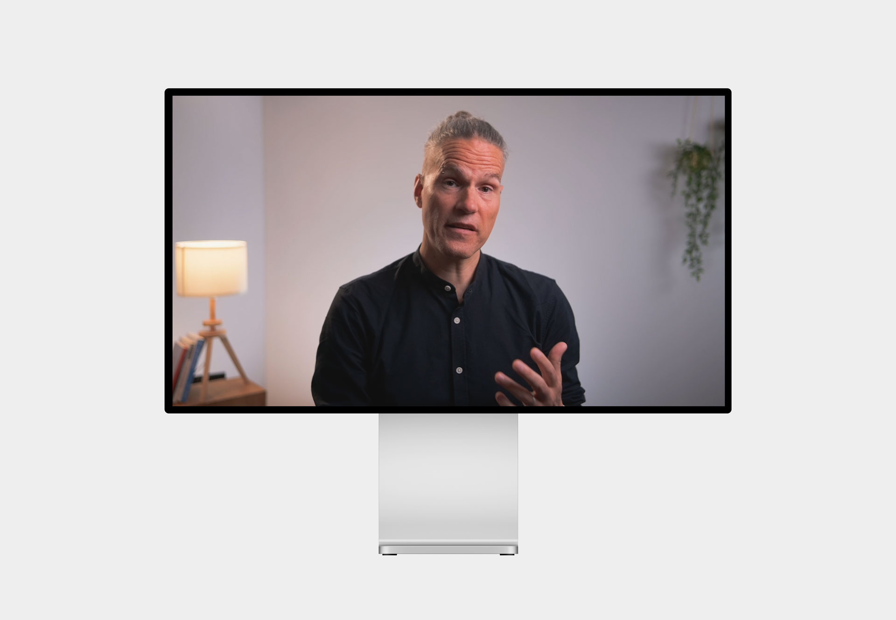

Hallo, ich bin Liam, Mediamatiker im 2. Lehrjahr
Aktuell nicht auf Projektsuche
Video | Statement
Mit Fabian Rohr haben wir ein Video erstellt, welches in einem Lernpfad für Führungskräfte der Swisscom eingebunden wurde.
Sharepoint ↗
Video | Animation
Für das Swisscom Brandcenter haben wir ein Video über das Thema Farben erstellt. Ich war bei der Produktion für das Audio zuständig und habe die Illustrationen vorbereitet.
Sharepoint ↗
Video | Interview
Ich habe bei diversen Folgen der Serie Walk and Talk von Swisscom mitgearbeitet. Hier siehst du alle Folgen, bei denen ich beteiligt war.
Artikel Oleg ↗Artikel Carola ↗
Artikel Marianne ↗

Video | Animation
Um Motion vorzustellen, haben wir über unser Team ein kurzes Video erstellt. Ich habe dafür unter anderem eine Illustration und Animation erstellt.
Artikel ↗
Video | Animation
Für CoCPC hatte Motion ein Animationsvideo und ein dazugehöriges E-Learning erstellt, an welchem ich kleine Änderungen für den Auftraggeber vorgenommen habe.
Sharepoint ↗
Über
Aktuell arbeite ich bei Motion als Multimediaproducer und erstelle Videos, Animationen und Illustrationen für diverse Auftraggeber. Ich lerne bei diesen Aufträgen viel Neues und gebe immer Vollgas. Ich arbeite sehr konzentriert und schätze es, dass ich von Anfang bis Ende an einem Auftrag mitarbeiten darf. Unter anderem habe ich bei der Walk and Talk Serie mitgearbeitet. Durch diverse Animationen konnte ich auch mein Wissen in After Effects vertiefen.
Erfahrung
Ich befinde mich gerade im 2. Lehrjahr und habe durch verschiedene
Projekte schon in viele Bereiche der Swisscom einen Einblick
bekommen dürfen. Ich war unter anderem Teil von Middleman,
Swisscom.ch und gerade von Motion. Dabei arbeite ich selbstständig
an Aufträgen und bin bei vielen Projekten mit dabei. Ich durfte auch
Erfahrungen im Swisscom Shop machen und die Swisscom dort einmal von
einer anderen Seite sehen.
Ich kenne mich mit der
Creative Cloud von Adobe aus und benutze Programme wie Premiere Pro,
After Effects oder Illustrator täglich bei meiner Arbeit. Ebenfalls
beherrsche ich Office 365 von Microsoft und benutze Programme wie
Word, Excel und andere in meinem Arbeitsalltag.
Jetzt
Ich gebe bei Motion Vollgas und bin Teil von diversen Aufträgen. Im
August werde ich ebenfalls die Rolle eines Fachexperten übernehmen
und so die Führungsrolle für Aufträge übernehmen. Ich werde mein
Wissen so an die anderen Lernenden weitergeben und gestalte Motion
so aktiv mit.
Falls ich dein Interesse wecken konnte, du
ein Projekt oder Fragen hast, freue ich mich über eine E-Mail an
hallo@liamschenk.ch.